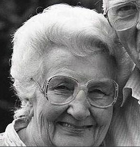
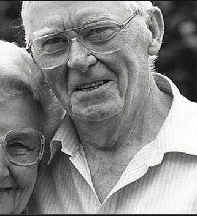
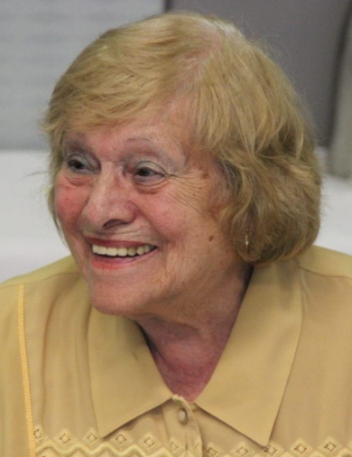
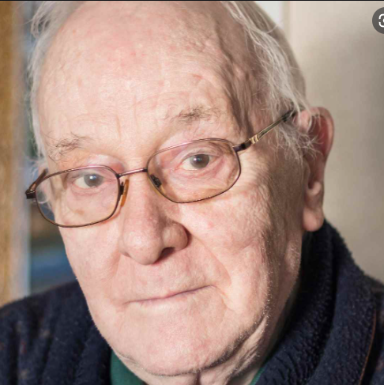
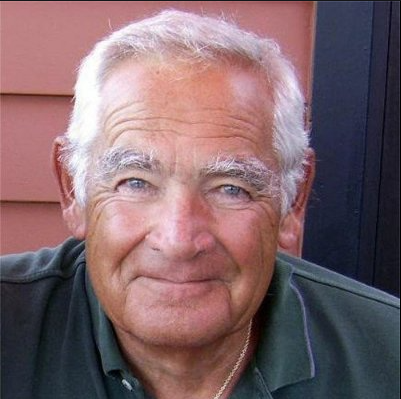

Fecha de nacimiento: 1999-04-23
Lugar de nacimiento: Navia
Fecha de nacimiento: 1969-10-13
Lugar de nacimiento: Taramundi
Comentario: la mejor madre del mundo.
Fecha de nacimiento: 1932-04-01
Lugar de nacimiento: Oviedo
Fecha de fallecimiento:
Lugar de fallecimiento:
Comentario: La mejor abuela del mundo de los difuntos.
Fecha de nacimiento: 1902-11-14
Lugar de nacimiento: Oviedo
Fecha de fallecimiento:
Lugar de fallecimiento:
Comentario: La mejor bisabuela del mundo de los difuntos.
Fecha de nacimiento: 1902-01-13
Lugar de nacimiento: Taramundi
Fecha de fallecimiento:
Lugar de fallecimiento:
Comentario: El mejor bisabuelo del mundo de los difuntos.
Fecha de nacimiento: 1936-04-13
Lugar de nacimiento: San Tirso de Abres
Fecha de fallecimiento:
Lugar de fallecimiento:
Comentario: El mejor abuelo del mundo de los difuntos.
Fecha de nacimiento: 1902-01-30
Lugar de nacimiento: San Tirso de Abres
Fecha de fallecimiento:
Lugar de fallecimiento:
Comentario: La segunda mejor bisabuela del mundo de los difuntos.
Fecha de nacimiento: 1900-01-13
Lugar de nacimiento: Taramundi
Fecha de fallecimiento:
Lugar de fallecimiento:
Comentario: No llegue a conocerlo.
Fecha de nacimiento: 1969-09-30
Lugar de nacimiento: Navia
Comentario: El mejor padre del mundo.
Fecha de nacimiento: 1940-01-04
Lugar de nacimiento: Villapedre
Comentario: La mejor abuela del mundo de los mortales.
Fecha de nacimiento: 1910-09-16
Lugar de nacimiento: Villayon
Fecha de fallecimiento:
Lugar de fallecimiento:
Comentario: No la llegue a conocer.
Fecha de nacimiento: 1910-07-01
Lugar de nacimiento: Villayon
Fecha de fallecimiento:
Lugar de fallecimiento:
Comentario: No lo llegue a conocer.
Fecha de nacimiento: 1931-04-30
Lugar de nacimiento: Villapedre
Comentario: El mejor abuelo del mundo de los mortales.
Fecha de nacimiento: 1887-04-26
Lugar de nacimiento: Puerto de Vega
Fecha de fallecimiento:
Lugar de fallecimiento:
Comentario: No la llegue a conocer.
Fecha de nacimiento: 1885-04-23
Lugar de nacimiento: Puerto de Vega
Fecha de fallecimiento:
Lugar de fallecimiento:
Comentario: No la llegue a conocer.